Grindor
Grindor
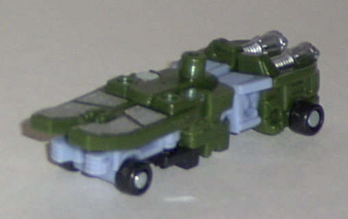 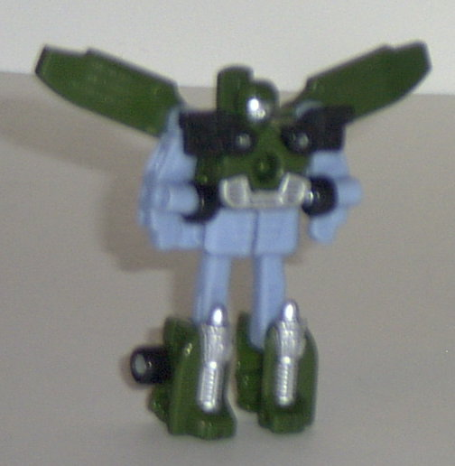
Allegiance : Minicon
Size : Mini-Con
Difficulty of Transformation : Easy
Color Scheme : Dark jungle green, pale light blue, silver, and some black
Rating : 6.3
Sunstorm
w/ Inferno and Street Action Team (Wal-Mart Exclusive)
(NOTE: Because this set is a repaint, this is not a full-blown review. This mainly covers any changes made to the set and the color scheme, and merely compares them to their original respective sets. For a review on the original Street Action Team, go here . For a review on Armada Thrust w/ Inferno- the mold that Sunstorm & Inferno are based on- go here .)
Set Price : $20 (U.S.)
Grindor
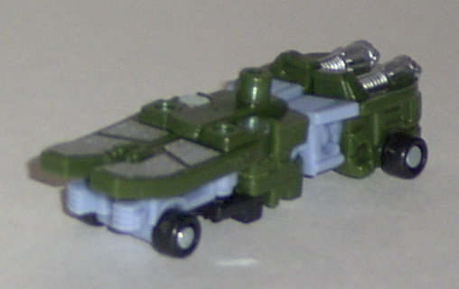
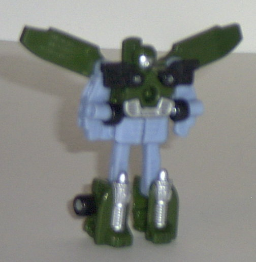
Allegiance
: Minicon
Size
: Mini-Con
Difficulty of Transformation
: Easy
Color Scheme
: Dark jungle green,
pale light blue, silver, and some black
Rating
: 6.3
Universe Grindor isn't
much of a repaint. Basically all they did was take Armada Grindor, replace
the dark navy blue with some jungle green, and replace some of the yellow
paint apps with silver ones. That's it. As such, he looks too similar to
his previous form, especially in robot mode. The green also doesn't mesh
as well with the other colors- it seems like just a random palette change.
Not to mention that green just isn't as fitting for a skateboard as the
dark blue was.
No mold changes have
been made to Universe Grindor.
High
Wire
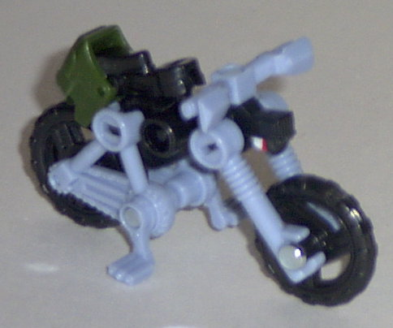
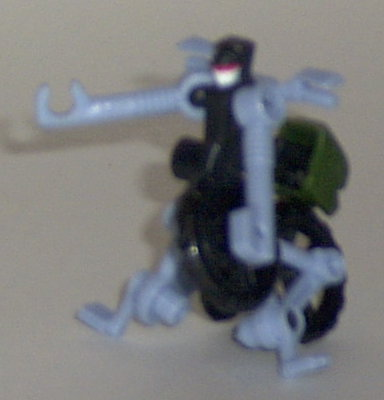
Allegiance
: Minicon
Size
: Mini-Con
Difficulty of Transformation
: Very
Easy
Color Scheme
: Black, pale light
blue, and some dark jungle green, silver, white, red, and aqua blue
Rating
: 0.8
If Universe Grindor isn't
much of repaint, Universe High Wire is even less of one. Seriously, what
a lame, half-way "repaint". All they did was change the dark blue seat
to a dark green- which doesn't even make SENSE! Who ever heard of a green
seat on a black-and-blue bike!? It's just so freaking random and lazy.
Not to mention that High Wire just bites anyways. Hasbro really needs to
start putting more effort into its Universe Exclusives.
No mold changes have
been made to Universe High Wire.
Sureshock
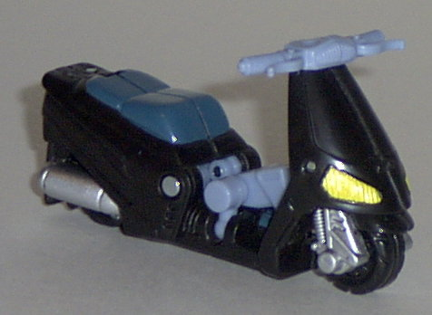
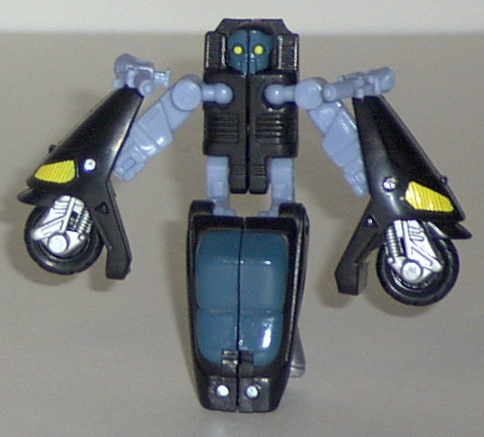
Allegiance
: Minicon
Size
: Mini-Con
Difficulty of Transformation
: Very
Easy
Color Scheme
: Black, pale light
blue, dark blue-gray, and some yellow and silver
Rating
: 3.3
Even though Universe
Sureshock still has a bit too many things in common with his Armada version-
like the paint apps and the pale light blue plastic- at least his major
color is different. Instead of a bright orange, Sureshock's now a much
more stomachable black. He looks mighty cool in vehicle mode, too. He's
the only member of the Universe Street Action Team that I consider improved
over the original.
No mold changes have
been made to Universe Sureshock.
Perceptor
(Gestalt Form of Street Action Team)
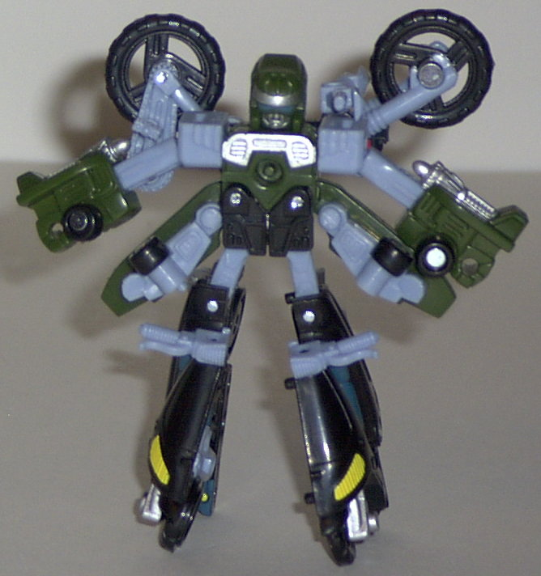
Difficulty of Transformation
: Hard
Color Scheme
: Black, pale light
blue, dark jungle green, and some silver, yellow, dark blue-gray, white,
red, and aqua blue
Rating
: 6.4
Universe Perceptor is,
like his component parts, a lazy repaint. His dark navy blue parts are
replaced with green, his orange parts with black, and most of his yellow
paint with silver. Like I've already mentioned, the green just doesn't
go with the other colors at all, and Perceptor just looks too darned similar
to his previous version.
Inferno
(Minicon)
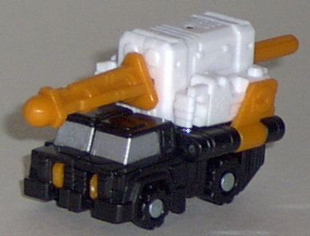
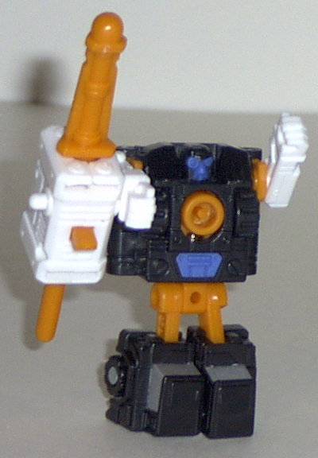
Allegiance
: Minicon
Size
: Mini-Con
Difficulty of Transformation
: Very
Easy
Color Scheme
: White, black, light
orange, and some silver and periwinkle
Rating
: 7.1
I think it's kind of
funny that Universe Inferno's color scheme is merely the side-result of
Sunstorm's colors, yet it all fits together so well. The light orange,
the white, and the black is an original color scheme, yet it works surprisingly
nicely as a whole. I don't think it has QUITE the uniformity of the original
Armada Inferno, though, namely because the colors aren't particularly as
fitting for a missile truck.
No mold changes have
been made to Universe Inferno, the Minicon.
 Sunstorm
Sunstorm
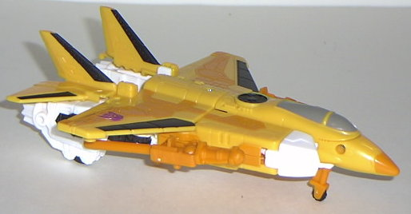
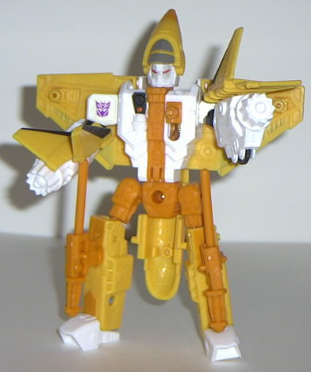
Allegiance
: Decepticon
Size
: Deluxe
Difficulty of Transformation
: Easy
Color Scheme
: White, orangish yellow,
light orange, and some black, red, shiny gray, and shiny light gray
Powerlinx ports
: 4 (1 gimmicked)
Rating
: 7.9
Sunstorm's color scheme,
at first, may seem really odd. (Although at least it's different, which
is more than I can say for the Street Action Team he comes with...) However,
it's almost exactly the same as that of G1 Sunstorm, a fan-favorite Starscream
repaint who never really got a toy back then. It's nice to see him finally
get a widely-released toy form as a repaint of Armada Thrust. Many have
called Sunstorm a "creamsicle", and he definitely reminds one of that-
the white as the cream, and the various orange and yellow colors as the
flavored ice. The various paint apps keep him from having too much of his
colors, however. The black and the gray also tend to keep him from being
completely bright and are welcome. Overall, though, it seems a little bit
too garish for a plane, even if it is a nice fan nod. I'd recommend either
version of Armada Thrust over this guy.
No mold changes have
been made to Sunstorm.
Sunstorm himself is a pretty good, if slightly inferior, repaint of Armada Thrust, and Inferno is a nice-looking Minicon. When you add on the lazily "repainted" Street Action Team, as well as a price ($20) that is more than the sum of its parts ($17), I can't see myself recommending this toy unless you can't find any of the previous versions of these molds. Or if you just really want a Sunstorm toy...
No Stats
Review by Beastbot